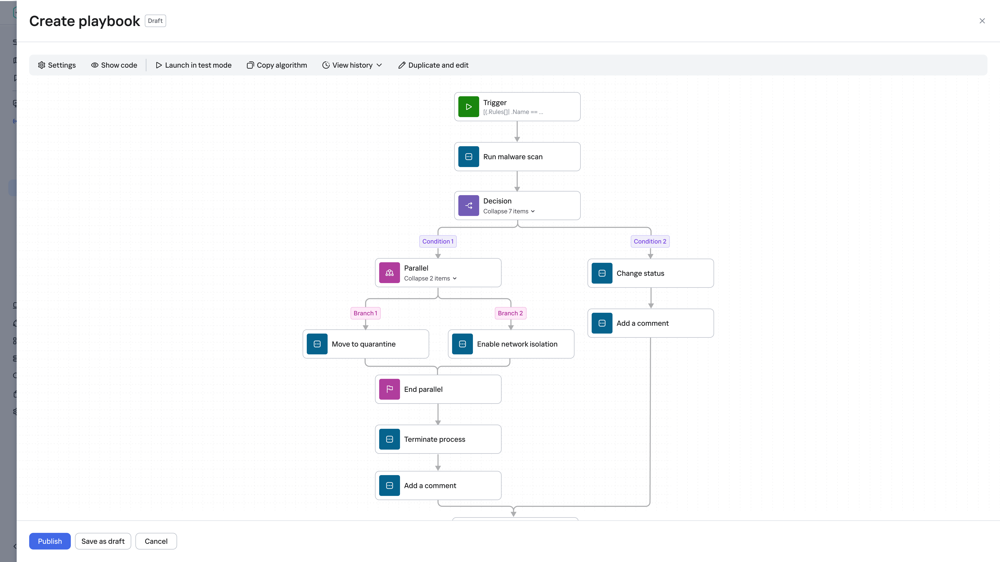
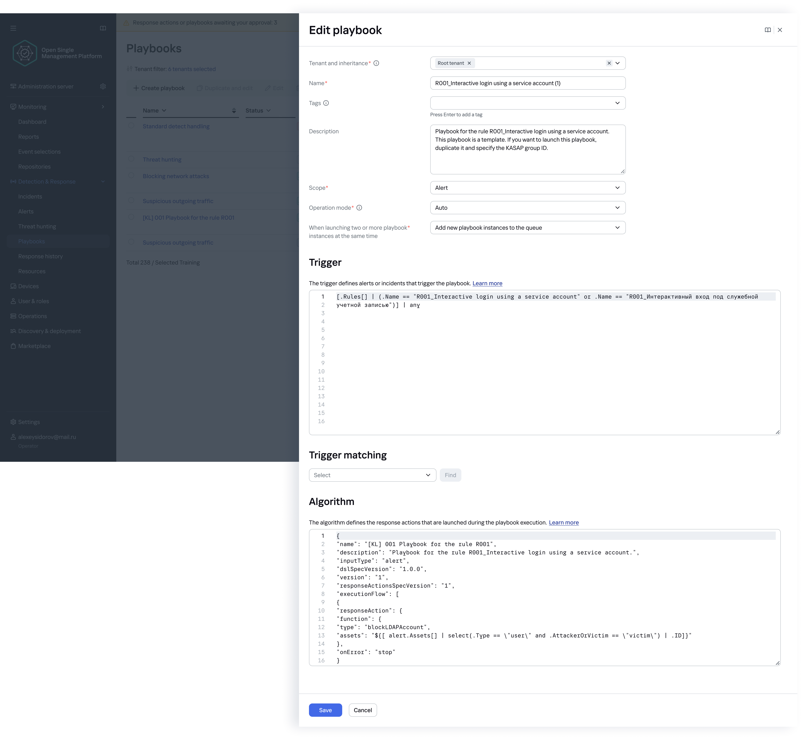
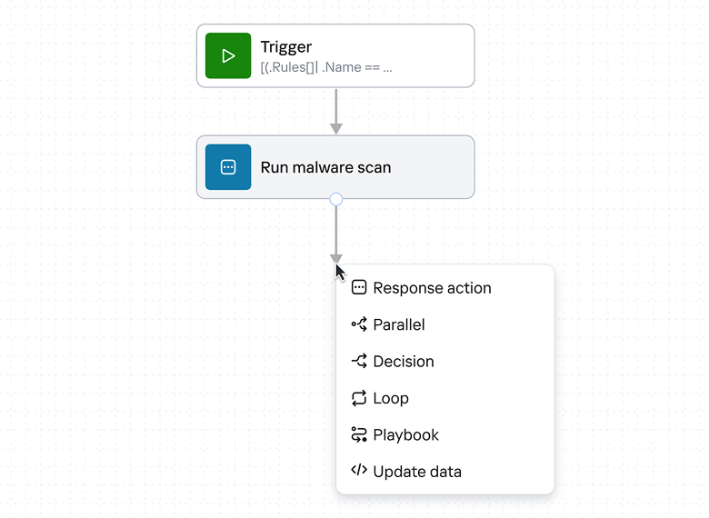
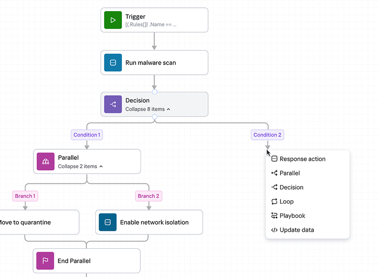
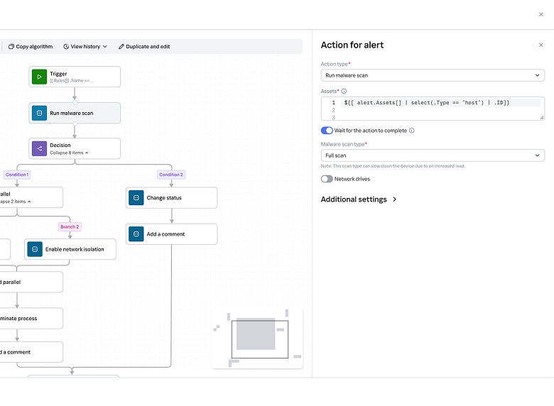
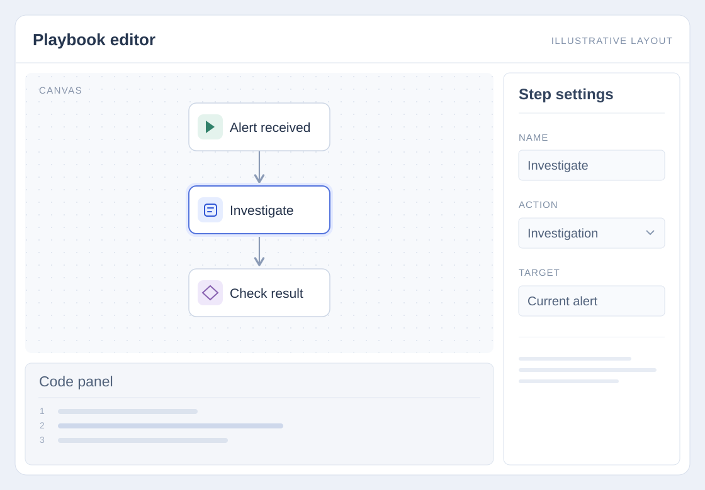
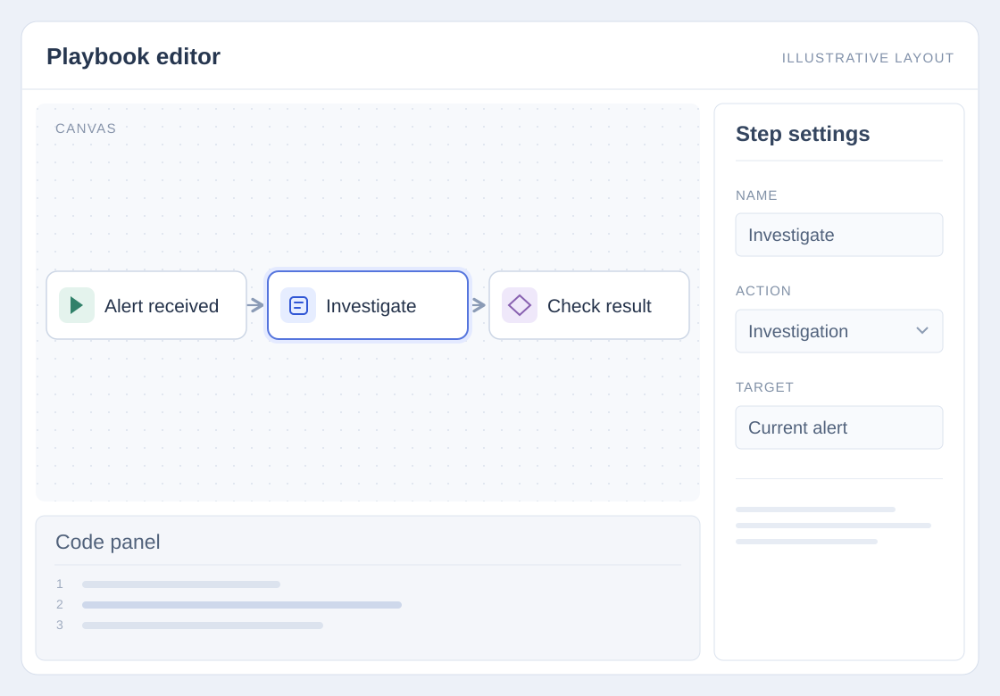
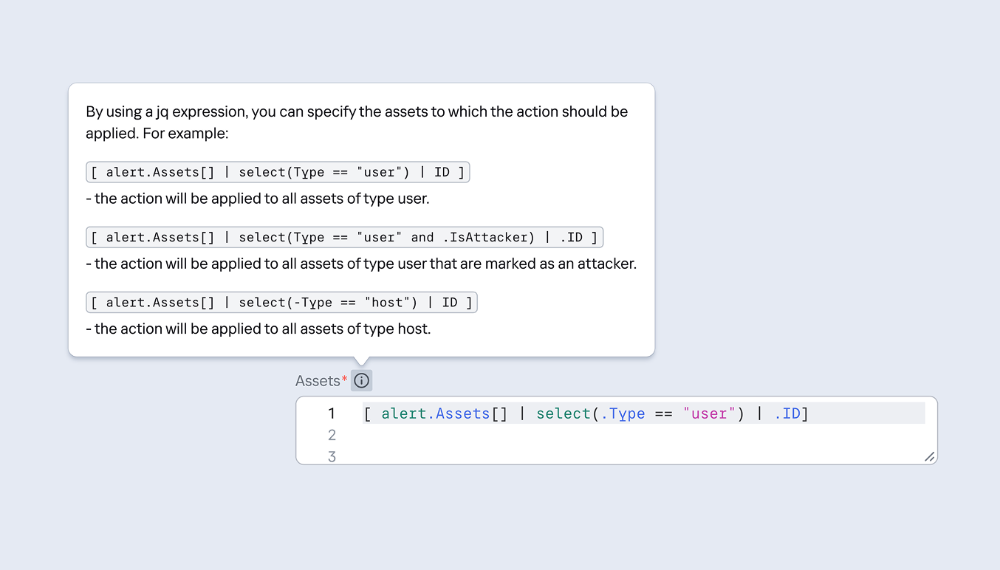

Playbook Editor
Designing a visual tool for automated security workflows. A playbook is a set of instructions that tells a security system how to respond to a potential threat. For example, it can scan a suspicious file and isolate it if a threat is detected. The Playbook Editor is where security analysts build these workflows: define actions, set conditions, and connect steps into a sequence.
I redesigned a code-based setup form into a visual editor.
Проектирование визуального инструмента для автоматизированных сценариев безопасности. Плейбук — это набор инструкций, который говорит системе безопасности, как реагировать на потенциальную угрозу. Например, просканировать подозрительный файл и изолировать его, если угроза подтвердилась. В редакторе плейбуков аналитики собирают такие сценарии: задают действия, условия и связывают шаги в последовательность.
Я переработала кодовую форму настройки в визуальный редактор.

Problem
Creating playbooks required writing code in the product's internal scripting language. Even experienced security analysts had to consult documentation and spent considerable time configuring actions and conditions.
Approach
I designed the editor around familiar interactions for adding, connecting, and configuring steps. Competitive analysis informed the interaction patterns, while discussions with internal analysts helped confirm the layout and the information shown on each step.
Outcome
The resulting design makes playbook creation visual: analysts can arrange steps, see their connections, and configure each step in context. Guidance and examples support the remaining code fields, reducing reliance on scripting without removing capabilities the product still needs.
My role
Led interaction design, visual design, and prototyping for the editor. Worked with an analyst on requirements and supported step types, reviewed competing products, and gathered feedback from internal security analysts to inform design decisions.
Проблема
Создание плейбуков требовало писать код на внутреннем скриптовом языке продукта. Даже опытным аналитикам приходилось сверяться с документацией и тратить много времени на настройку действий и условий.
Подход
Я построила редактор вокруг привычных взаимодействий — добавления, соединения и настройки шагов. Конкурентный анализ подсказал паттерны взаимодействия, а обсуждения с внутренними аналитиками помогли выверить раскладку и состав информации на каждом шаге.
Результат
Итоговый дизайн делает создание плейбука визуальным: аналитик расставляет шаги, видит их связи и настраивает каждый шаг в контексте. Подсказки и примеры поддерживают оставшиеся кодовые поля, снижая зависимость от скриптов, но не убирая возможности, которые продукту всё ещё нужны.
Моя роль
Вела дизайн взаимодействия, визуальный дизайн и прототипирование редактора. Работала с аналитиком над требованиями и типами шагов, изучала конкурентов и собирала фидбэк у внутренних аналитиков безопасности для дизайн-решений.
01. Writing code stood in the way of creating playbooks 01. Код мешал создавать плейбуки

The original editor was a form where analysts had to describe playbook logic in the product's internal scripting language, DSL. There was no visual representation of the steps or their connections. Creating a playbook meant learning the syntax, checking documentation, and translating the intended actions and conditions into code.
Internal feedback
Some analysts said they were unwilling to create playbooks this way and preferred other tools.
Изначальный редактор был формой, где аналитик описывал логику плейбука на внутреннем скриптовом языке продукта — DSL. Визуального представления шагов и их связей не было. Создать плейбук означало выучить синтаксис, сверяться с документацией и переводить задуманные действия и условия в код.
Внутренний фидбэк
Некоторые аналитики говорили, что не готовы создавать плейбуки таким образом, и предпочитали другие инструменты.
02. Making playbook creation more accessible 02. Сделать создание плейбуков доступнее
The feedback made the product challenge clear: playbook creation needed to become a feature analysts would choose to use. We needed an experience that felt approachable, supported their everyday tasks, and could compete with the tools they already knew. We decided to replace the scripting-based form with a visual playbook editor, where analysts could build a sequence of actions by adding and connecting steps.
Start with the building blocks
To shape the editor, we first needed to define its building blocks. The analyst identified the step types our product needed to support. I used that foundation to design how analysts would add each step, connect it to others, and configure its settings.
Фидбэк ясно обозначил продуктовую задачу: создание плейбуков должно стать функцией, которой аналитики захотят пользоваться. Нужен был понятный опыт, который поддерживает их повседневные задачи и может конкурировать с инструментами, которые они уже знают. Мы решили заменить форму на скриптах визуальным редактором плейбуков, где аналитик собирает последовательность действий, добавляя и связывая шаги.
Начать со строительных блоков
Чтобы задать форму редактора, сначала нужно было определить его строительные блоки. Аналитик определил, какие типы шагов должен поддерживать продукт. На этой основе я спроектировала, как аналитик добавляет каждый шаг, связывает его с другими и настраивает его параметры.
Starts the playbook when specified conditions are met
Performs a response action
Chooses a branch based on a condition
Runs multiple branches at the same time
Repeats steps for each data item
Runs another reusable playbook
Modifies data used by the playbook
Запускает плейбук при заданных условиях
Выполняет ответное действие
Выбирает ветку по условию
Запускает несколько веток одновременно
Повторяет шаги для каждого элемента данных
Запускает другой переиспользуемый плейбук
Изменяет данные, используемые плейбуком
03. Make the interactions feel familiar 03. Сделать взаимодействия привычными

Add
How users choose the next action and place it in the playbook.

Connect
How users define the sequence and create branches between steps.

Configure
How users access the parameters that control a step's behavior.
Добавление
Как пользователь выбирает следующее действие и ставит его в плейбук.
Соединение
Как пользователь задаёт последовательность и создаёт ветки между шагами.
Настройка
Как пользователь получает доступ к параметрам, управляющим поведением шага.
04. Validate the layout with internal analysts 04. Проверить раскладку на внутренних аналитиках


01. Playbook direction
Keep the vertical layout.
Most analysts preferred the top-to-bottom arrangement. Their feedback supported the direction already used in the prototype, so I retained it.
02. Step content
Show the name only.
I also asked whether step cards needed a description alongside the name. Based on the feedback, I kept only the name on each card.
03. Nested steps
Add Show / Hide controls.
Parallel and Decision steps can contain multiple nested steps. Analysts wanted a way to reduce visual clutter, so I added Show / Hide controls to collapse and expand their contents.
01. Направление плейбука
Оставить вертикальную раскладку.
Большинство аналитиков предпочли расположение сверху вниз. Их фидбэк поддержал направление, уже использованное в прототипе, — я его сохранила.
02. Содержимое шага
Показывать только название.
Я также спросила, нужно ли на карточках шага описание рядом с названием. По фидбэку я оставила на каждой карточке только название.
03. Вложенные шаги
Добавить «Показать/Скрыть».
Шаги «Параллельно» и «Условие» могут содержать несколько вложенных шагов. Аналитики хотели уменьшить визуальный шум, поэтому я добавила элементы «Показать/Скрыть», чтобы сворачивать и разворачивать содержимое.
05. A playbook you can see and configure 05. Плейбук, который видно и можно настроить
06. Guidance where code was still required 06. Подсказки там, где код всё ещё нужен

Technical constraints meant we couldn't remove DSL from every setting. Some fields still required expressions, including fields used to select the asset an action should target. I added contextual guidance and examples to explain what to enter and show the expected format alongside the setting.
Internal feedback
Internal users said these examples were useful when completing the remaining DSL fields.
Технические ограничения не позволяли убрать DSL из каждой настройки. Часть полей по-прежнему требовала выражений — в том числе поля выбора актива, на который направлено действие. Я добавила контекстные подсказки и примеры, объясняющие, что вводить, и показывающие ожидаемый формат рядом с настройкой.
Внутренний фидбэк
Внутренние пользователи отметили, что такие примеры помогают заполнять оставшиеся поля DSL.